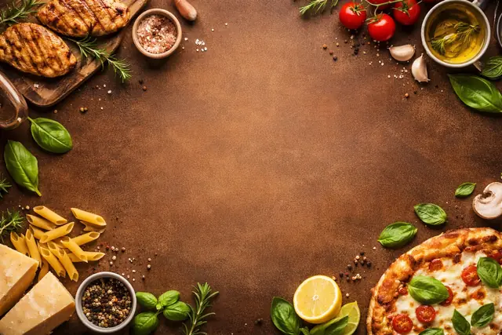

La cuisine de famille d'Antoine
Des recettes de famille, servies avec amour.
Des plats testés et approuvés à la maison : des quantités qui s'adaptent au nombre de convives, un mode cuisine pas à pas, des minuteurs intégrés, une liste de courses et un assistant pour t'aider à choisir.
La carte
Toutes nos recettes
Pas d'idée ?
La roulette du chef
Laisse le hasard choisir le menu du jour.

Coup de cœur
La préférée des visiteurs
Chargement des likes…
Classement en direct, d'après les ❤️ laissés sur chaque recette.
Pause gourmande
Les mini-jeux du restaurant
Service infini
Le chef traverse le restaurant en courant : saute, glisse et ramasse les pièces.
Pas encore de recordMemory du chef
Retrouve les paires de plats de la maison en un minimum de coups.
Pas encore de recordQuiz du chef
10 questions sur les recettes, les techniques et l'histoire des plats.
Pas encore de recordCoup de feu
Les commandes s'enchaînent : assemble chaque plat dans le bon ordre, vite !
Pas encore de recordTon commis virtuel
Demande au chef
Une envie, une contrainte, un frigo à vider ? L'assistant connaît toutes les recettes de la maison : il propose une idée, adapte les quantités, remplace un ingrédient, convertit les unités et lance tes minuteurs.